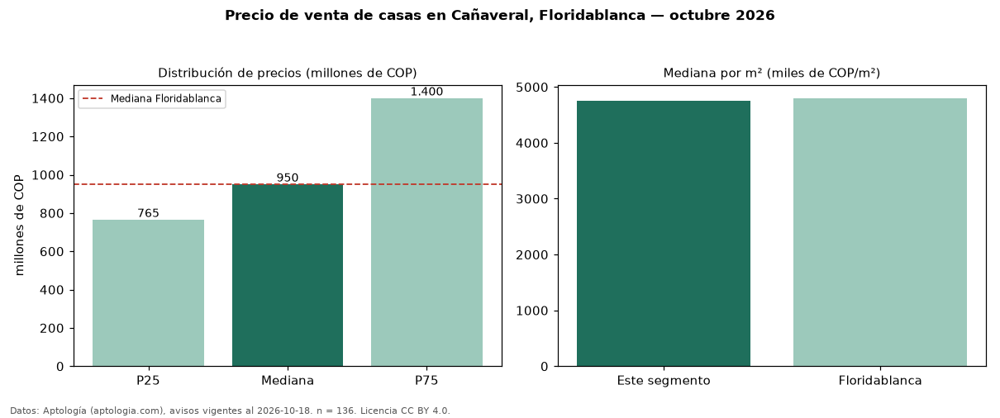

Precio de venta de casas en Cañaveral, Floridablanca — octubre 2026
COP 950 millones es el precio mediano de casas en venta en Cañaveral, Floridablanca (n = 136 avisos). Prácticamente coincide con la mediana de Floridablanca para casas (COP 950 millones). Por metro cuadrado, la mediana es COP 4,75 millones/m² (n = 136 avisos con área), 1 % por debajo de Floridablanca (COP 4,80 millones/m²). El área mediana anunciada es 219 m². El segmento con más oferta es el de 3 o más habitaciones (135 avisos, mediana COP 950 millones). La administración mediana declarada es COP 608.000 al mes (n = 111). La mitad central de los avisos va de COP 765 millones a COP 1,40 mil millones (razón 1,8), una dispersión moderada. El estrato más frecuente es 5 (66 % de los avisos con estrato). Datos: Aptología (aptologia.com), CC BY 4.0 — https://www.aptologia.com/casas-en-venta/floridablanca/canaveral. Archivos: PDF, CSV con las cifras y gráfica PNG.

| Avisos únicos | 136 |
|---|---|
| Percentil 25 | COP 765.000.000 |
| Mediana | COP 950.000.000 |
| Percentil 75 | COP 1.400.000.000 |
| Mediana por m² | COP 4.747.881 |
Fuente: avisos vigentes de portales inmobiliarios recopilados por Aptología, deduplicados (mínimo 30 avisos únicos por celda). Precios pedidos, no cerrados. Fecha: 2026-10-18.